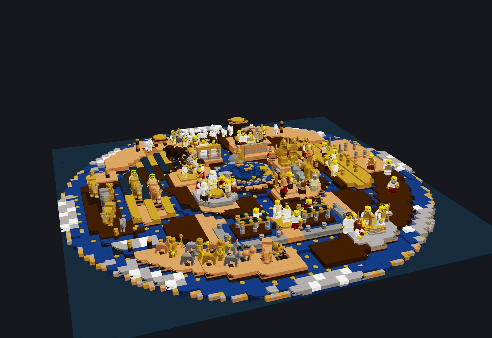
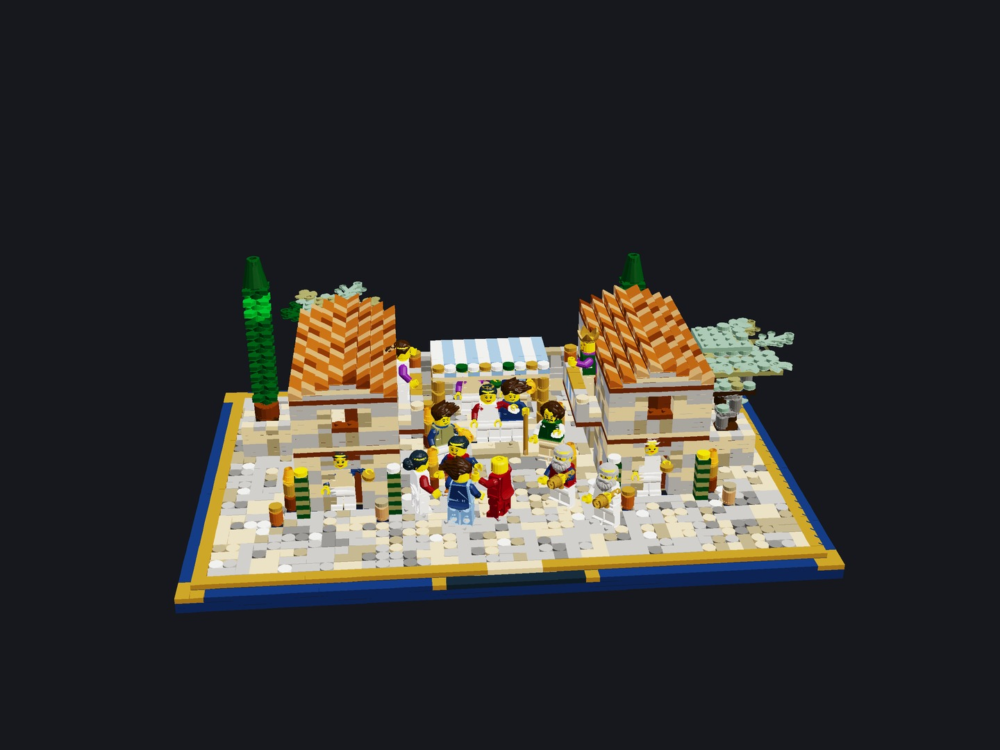
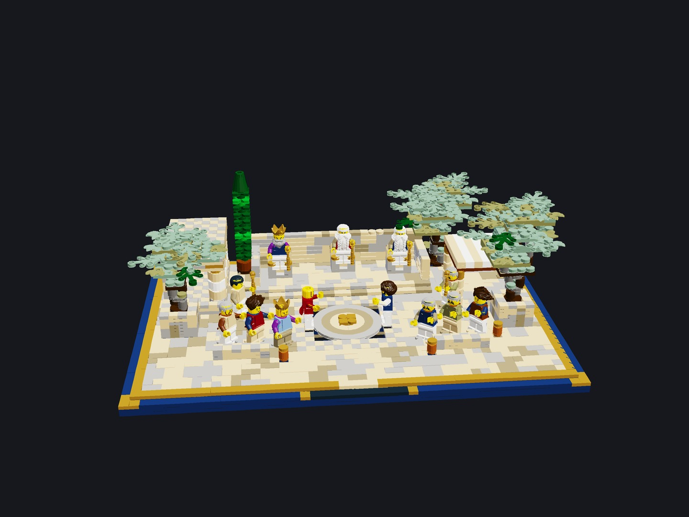
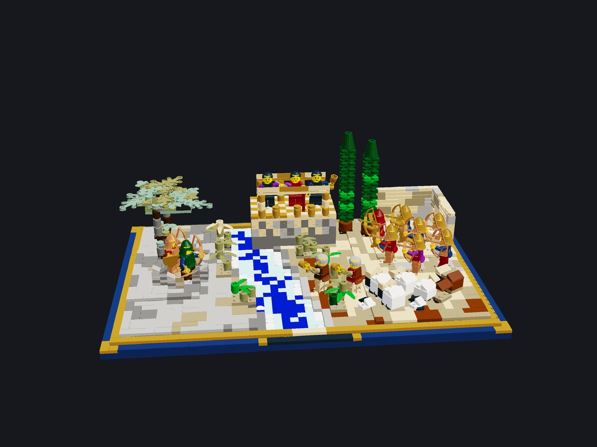
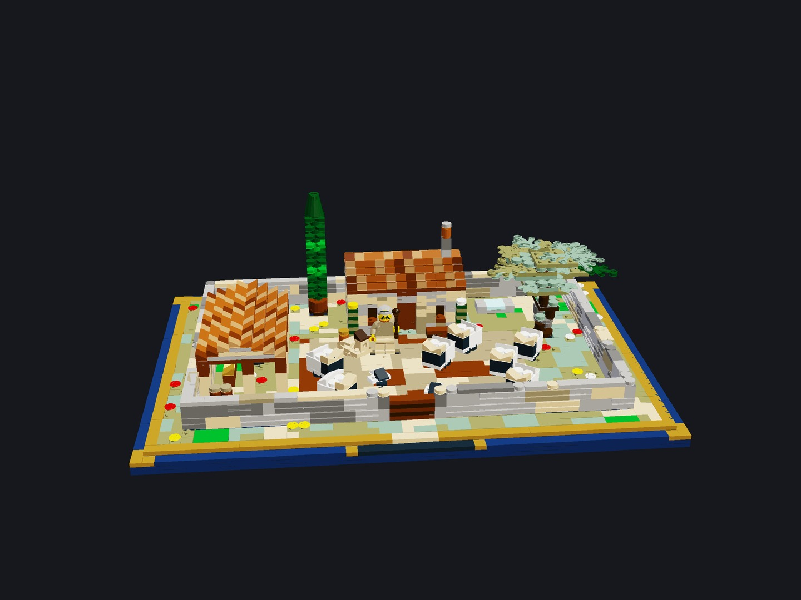
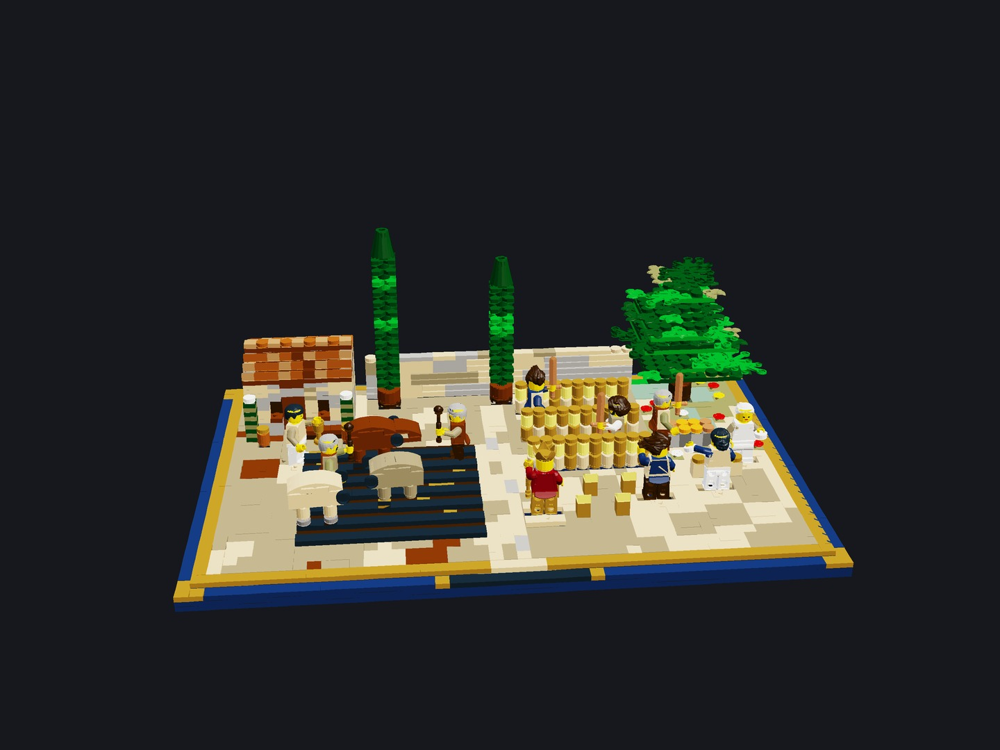
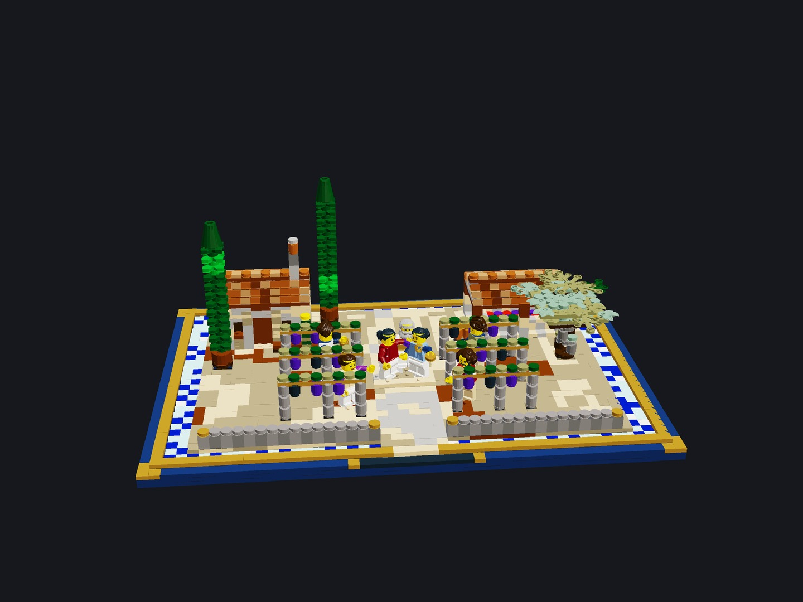
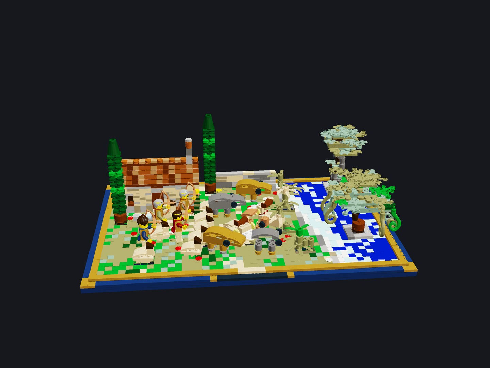
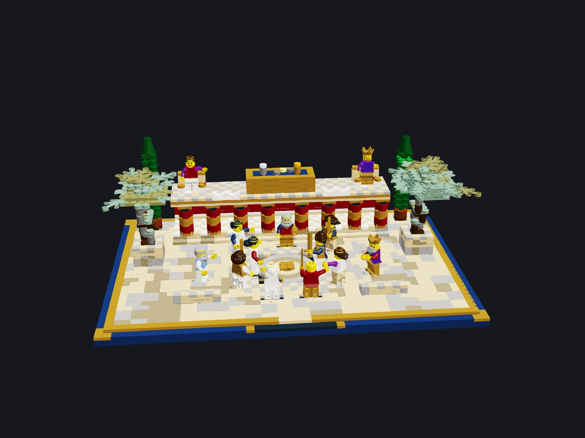
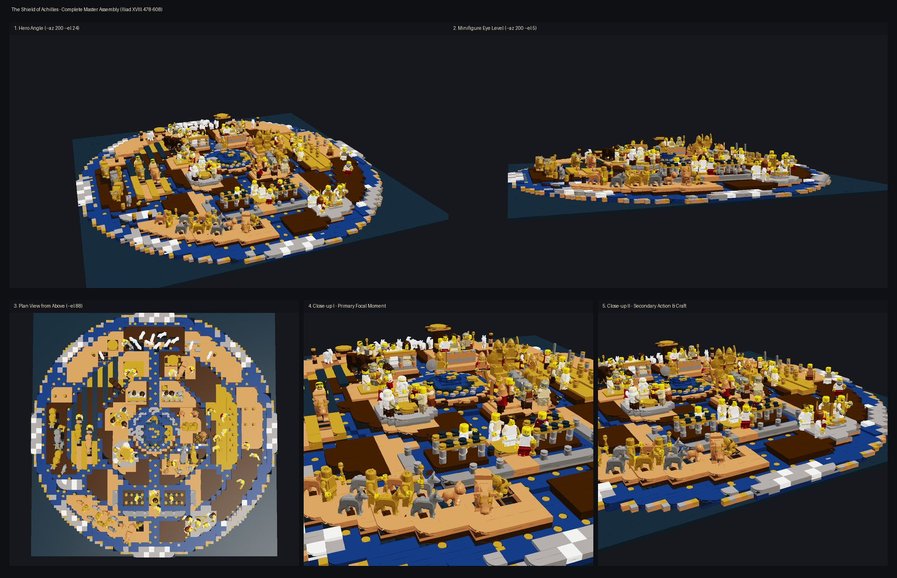

The Shield of Achilles
In Hephaestus's Olympus foundry, the god hammers five concentric folds of bronze, tin, dark-blue kyanos, and gold into a living cosmos: the revolving Heavens on the central boss, the Cities at Peace and at War, the Thrice-Ploughed Field, the King's Harvest, the Vintage, the Herd of Straight-Horned Cattle attacked by Two Lions, the Sheepfold in the Fair Glen, the Choros of Daedalus, and the mighty stream of River Oceanus.
On it he wrought the earth, the sea, the heaven, the unwearying sun, the moon at the full, and all the signs that crown the sky... and two fair cities of mortal men... and around the uttermost rim he set the great strength of the River Ocean. (Iliad XVIII.483-608)

The object
Two complete architectural systems built from the same procedural LDraw grammar and verified to 0 not clicked and 0 clashes by clicks.py: (1) The 96x96-stud Five-Ring Circular Relief Shield (7,522 pieces) with 10 independent lift-out radial kits (M0-M9) seated on a stepped bronze, kyanos, and gold frame; and (2) Eight Monumental 48x32 Collector's Diorama Stage Sets (17,109 pieces) on Dark Blue (272) and Pearl Gold (297) museum plinths with multi-storey stone townhouses, continuous 54200 barrel-tile roofs, Doric stoas, cyclopean bastions, raised stone tree planters, and brick-built livestock.









How it is built
- Every single kit and sub-module is generated by Python code on tools/forage/product/kitlib.py and tools/forage/product/kits/shield_diorama_lib.py — never hand-typed LDraw lines.
- All 20 builds pass tools/forage/product/clicks.py with 0 parts not clicked and 0 pairs of parts in the same space.
- Continuous pitched terracotta barrel-tile roofs built from alternating Dark Orange (484), Medium Nougat (84), and Reddish Brown (70) 54200 cheese slopes over stepped Tan/Dark Tan gable tympanums.
- Coursed Tan (19) and Dark Tan (28) ashlar walls with Light Bluish Gray (71) corner quoins, stone and timber doorway lintels, recessed Dark Blue (272) interiors, and climbing Bright Green (10) ivy.
- Two-layer cross-bonded baseplates on every lift-out circular section (M0-M9) and a 3-plate stepped Dark Blue (272) + Pearl Gold (297) museum plinth on all eight 48x32 standalone dioramas.
What the checker says
| Build | File | Pieces | Loose | Clashes |
|---|---|---|---|---|
| Master Circular Shield Assembly (96x96 studs, Frame + M0-M9) | set.shield-of-achilles | 7,522 | 0 | 0 |
| Diorama I: The Bridal Torch-Procession & Flute-Players (48x32) | set.shield-diorama-wedding | 3,475 | 0 | 0 |
| Diorama II: The Agora Dispute & Two Talents of Gold (48x32) | set.shield-diorama-agora | 2,119 | 0 | 0 |
| Diorama III: The City at War, Golden Ares & Athena & River Ambush (48x32) | set.shield-diorama-ambush | 1,957 | 0 | 0 |
| Diorama IV: The Fair Glen of White Sheep, Roofed Folds & Steading (48x32) | set.shield-diorama-sheepfold | 1,998 | 0 | 0 |
| Diorama V: The King's Harvest, Thrice-Ploughed Glebe & Oak Feast (48x32) | set.shield-diorama-harvest | 1,673 | 0 | 0 |
| Diorama VI: The Golden Vineyard, Kyanos Trench, Tin Fence & Wine-Press (48x32) | set.shield-diorama-vineyard | 1,809 | 0 | 0 |
| Diorama VII: Straight-Horned Cattle of Gold & Tin & Two Tawny Lions (48x32) | set.shield-diorama-cattle | 2,108 | 0 | 0 |
| Diorama VIII: The Choros of Daedalus, Knossian Palace & Tumblers (48x32) | set.shield-diorama-choros | 1,970 | 0 | 0 |
| Circular Shield Frame (96x96 Baseplates, Stepped Seats & Dividers) | set.shield-frame | 2,754 | 0 | 0 |
| Section M0: Earth, Sea, Sky, Sun, Moon & Revolving Bear on the Boss | set.shield-m0 | 376 | 0 | 0 |
| Section M1: The City at Peace — Bridal Torch-Song & Sacred Circle | set.shield-m1 | 486 | 0 | 0 |
| Section M2: The City at War — Golden Ares & Athena & River Ambush | set.shield-m2 | 527 | 0 | 0 |
| Section M3: The Thrice-Ploughed Field & Headland Wine-Cup | set.shield-m3 | 437 | 0 | 0 |
| Section M4: The King's Estate, Reapers, Binders & Oak Ox-Feast | set.shield-m4 | 497 | 0 | 0 |
| Section M5: The Golden Vineyard, Kyanos Trench, Tin Fence & Linus Boy | set.shield-m5 | 443 | 0 | 0 |
| Section M6: Cattle of Gold & Tin, Two Lions & Nine Dogs at the River | set.shield-m6 | 413 | 0 | 0 |
| Section M7: The Fair Glen of White Sheep, Roofed Folds & Cots | set.shield-m7 | 426 | 0 | 0 |
| Section M8: The Choros Dance Floor of Daedalus & Potter's Wheel | set.shield-m8 | 470 | 0 | 0 |
| Section M9: The Mighty Stream of River Oceanus & Triple Rim | set.shield-m9 | 693 | 0 | 0 |